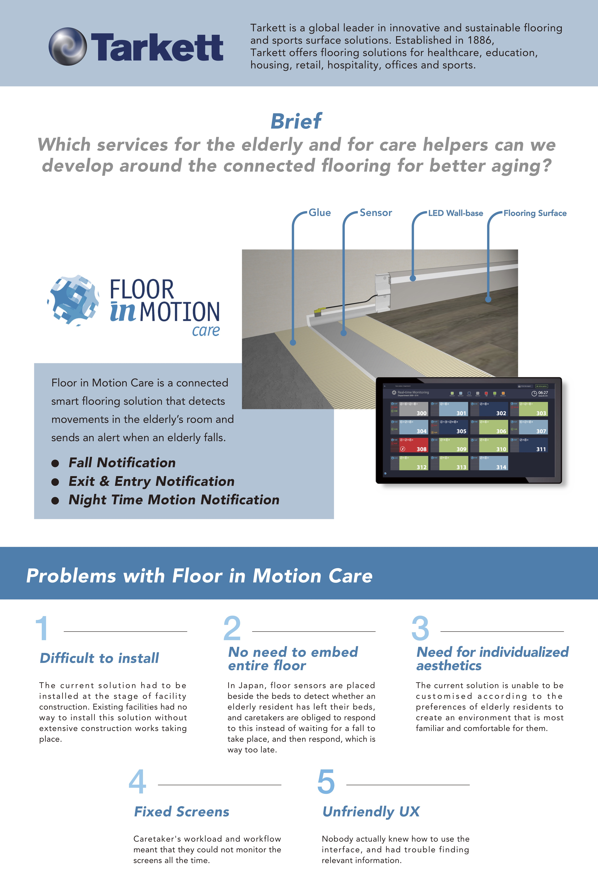
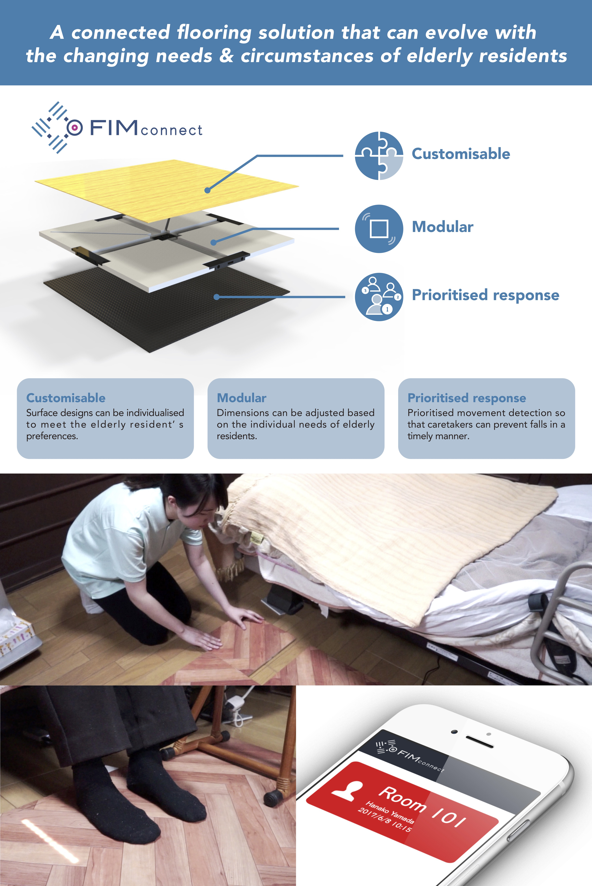
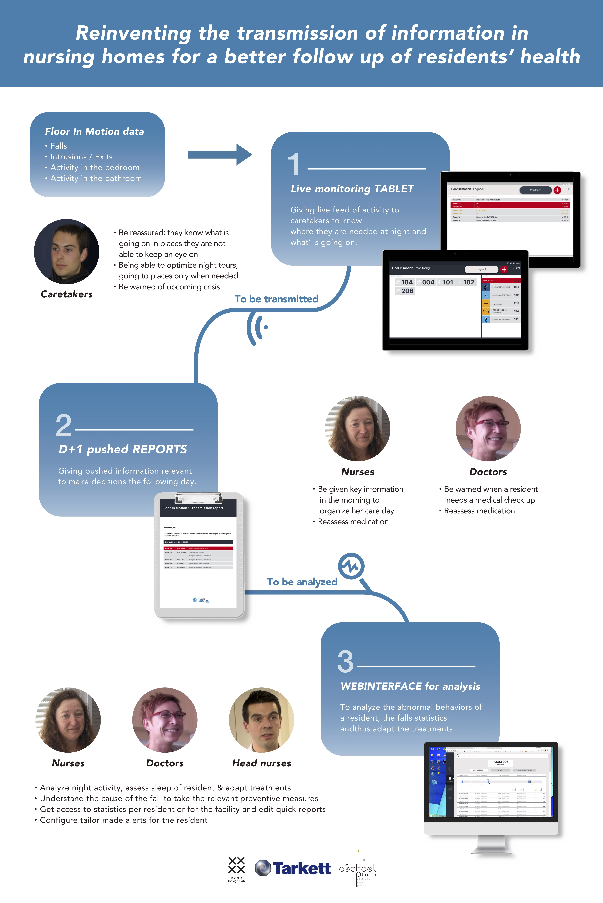
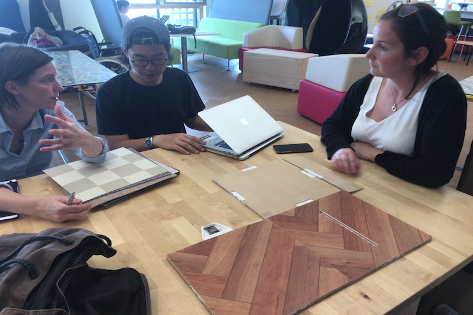
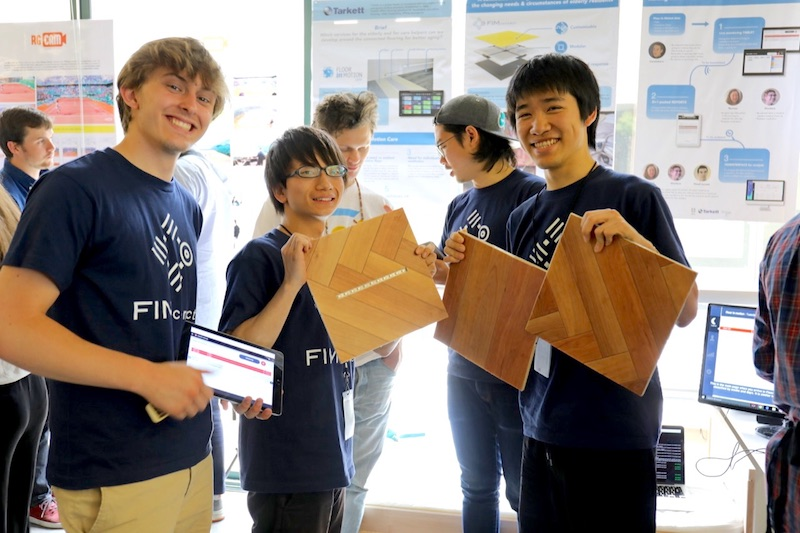

スタンフォード大学発の国際産学連携プロジェクトME310/SUGARにて、 フランスの建材メーカーTarkett、Paris est d.school、京都工芸繊維大学が合同となって行ったプロジェクト。 スポンサー企業であるTarkettから与えられた、「床材を用いたスマート介護支援システムの開発」という課題での成果物。 ご高齢者の方への街頭インタビューや、特別養護老人ホームなどの介護施設で介護士の方に意見を聞きながら、 プロトタイプ作りや評価を行った。
介護士の方へのインタビューを通じて、転倒が一番のリスクということが判明したため、 床面に埋め込めるモジュラー式のIoTセンサーマットを開発した。 モジュラー式にすることで従来の床センサーを配置できなかった部屋に適応することが可能になり、柔軟に介護環境を構築することができるようになった。 また、無線通信機能によりセンサデータが自動的にサーバに蓄積されるため、そのデータを分析することでよりハイレベルなケアを行うことも可能になる。
  
 